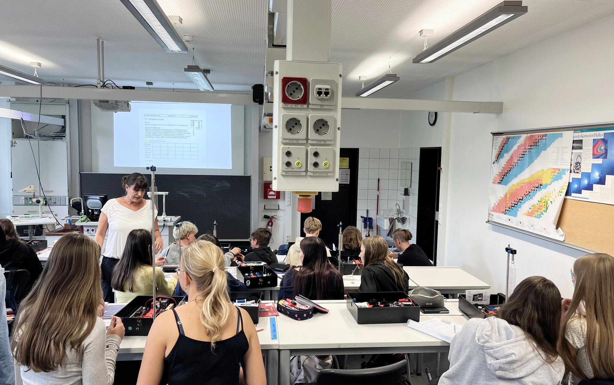
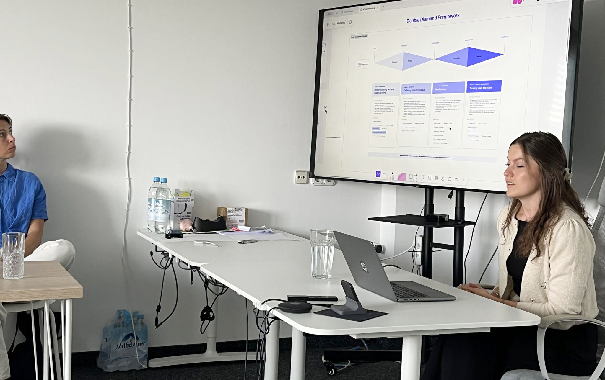
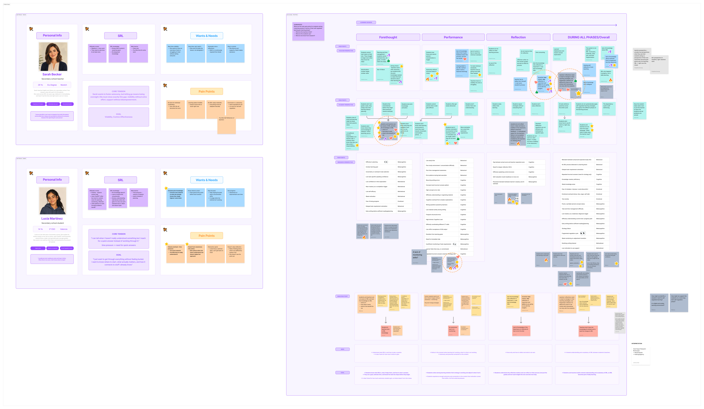
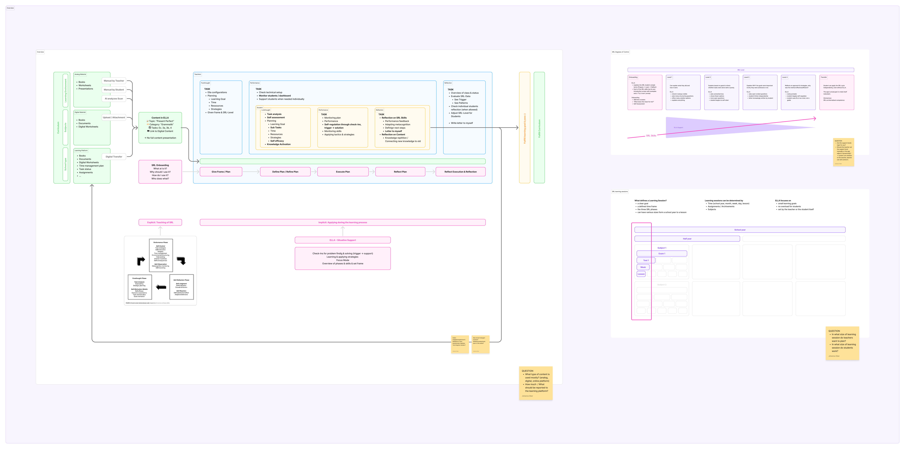
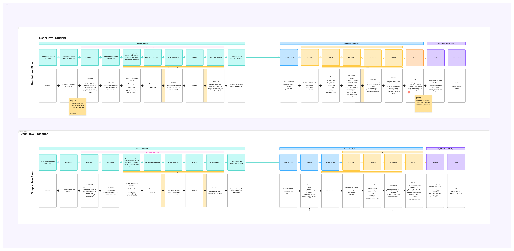

ELLA is an international EU research project investigating how self-regulated learning can be sustainably embedded in schools. Its central outcome is an AI-driven toolkit that helps students in grades 6 to 8 build SRL skills, and gives teachers practical, low-barrier guidance to integrate SRL into everyday classroom instruction.

Self-regulated learning is a skill teachers across Europe increasingly want to bring into the classroom. Yet most lack the time, are unsure how to implement it well, and fear the added workload, so students rarely get the individual support that SRL really needs.

Three sources shaped a coherent picture. The ELLA team analysed 122 research papers to uncover why self-regulated learning still struggles to take hold in schools. In parallel, we brought together 16 learning experts from across Europe and ran a student survey to ground the findings in real classroom experience.

This is where I joined as UX designer. I consolidated and evaluated the research findings and brought the group of experts into our way of working, guiding them through each step and feeding everything into a structured design thinking process.

With the experts, we built personas and mapped the main pain points across every phase of a learning session. We distilled these into core needs and clear goals, then ran further workshops to ideate across problem and solution space: how to teach SRL without adding time or effort for teachers.

The project is now in the prototyping phase, where all the findings take shape as screens. It is still ongoing: prototypes are due by September, and we will then test them directly in schools with teachers and students.
ELLA translates a complex body of learning science into a practical tool that fits into existing school workflows. By involving 16 international experts across the full design process, the concept reflects diverse school cultures, subjects, and teaching styles: not a one-size-fits-all solution, but an adaptive companion built from the ground up with real educators.
With €400,000 in EU funding and active schools at the table from day one, deployment isn't a hope, it's the plan. The process itself demonstrates what rigorous, multi-stakeholder UX research looks like when it's built to matter.

BIRD Education Platform

Langenscheidt Language Coach

Chain²Bike